Vision MOD is a real-time visual synthesizer for macOS and Windows. It borrows the Complex Oscillator idea from modular synthesis, where one oscillator shapes the other: the Modifier material provides the dynamics, and the Carrier material is the image carried by those dynamics. One footage modulates another footage, producing a new audio-visual phenomenon.
Every station downstream of the source operates on the resulting Carrier stream. Background removal only happens at the very source (Fundamental Vision). Areas with no content carry alpha 0 from that point on, and every downstream station discards those pixels, so the subject stays cut out through the whole chain.
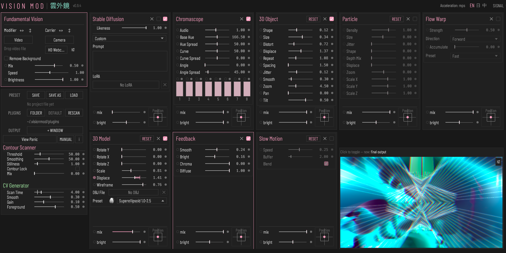
| HUE | Toggle the HUE colour-wheel panel to adjust the interface accent colour |
| SIGNAL | Toggle the SIGNAL floating window (contour preview + seven CV meters + audio input meters + CV Output routing + LFO) |
| Language | Switch the interface language (EN / 日 / 中); hover descriptions follow and the choice persists |
| SD status | SD service status: shows SD Loading while starting, then the active acceleration backend |
| Outer ring | Outer ring: drag to change the accent hue |
| Centre | Centre: drag vertically to change the accent saturation |
| Presets | Preset hues: click to apply Coral / Mint / Sky / Violet |
| Phase colours | Phase-derived colour preview (complementary +180°, triadic ±120°, analogous ±30°), reference only |
The pipeline is defined by the Signal Flow list on the left side of the main window. Fundamental Vision is pinned to slot 1 as the source anchor; every other module is added, reordered, bypassed, or removed by the user. Drag the grip icon to reorder, click the X icon (two-click confirmation) to remove, toggle the checkbox to bypass an instance. The same module kind can be added multiple times; each instance keeps its own parameters and is wired in series, top to bottom.
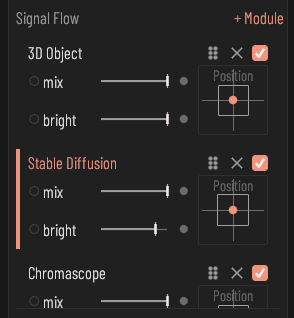
| Signal Flow | Signal Flow: the module list, executed top to bottom; the same module kind can be instantiated multiple times with independent parameters |
| Drag to reorder | Drag to reorder: hold the grip icon and drag vertically to change the instance position in the signal flow (Fundamental Vision is pinned to the first slot) |
| Remove | Remove module: the first click shows \"Confirm?\" on the row; click the same X again to delete, or click elsewhere / press Esc to cancel |
| Enable | Enable this instance: unchecking bypasses the instance (signal passes through to the next station) without affecting parameters or order. Exceptions: unchecking Stable Diffusion releases its model; re-checking Slow Motion clears the recording and starts again |
| Previous module | Switch to the previous module panel in the signal flow (wraps from the first to the last) |
| Next module | Switch to the next module panel in the signal flow (wraps from the last to the first) |
| Preview | Preview: click to switch between the current module's effect and the final output; while the mask panel is open, this area paints the mask instead |
The + Module button opens the module library popup. Available modules: Stable Diffusion (Stream Diffusion on Windows), Minimalize, Chromascope, 3D Object, Particle, Flow Warp, Feedback, 3D Model, Slow Motion, Plugin. Stable Diffusion is a single-instance module: once it is in the chain, its entry is greyed out. Fundamental Vision is the fixed anchor and cannot be added or removed.
| Module item | Click to append this module to the end of the signal flow, enabled; greyed out means only one is allowed and it already exists |
Every station after Fundamental Vision shares the same header controls: an enable checkbox, Mix, Brightness, and a Position / Scale pad. Mix is the station dry/wet and is the only mix control; modules have no mix fader of their own. A newly added instance starts with Mix at 0, so adding a module does not change the picture until you raise Mix.
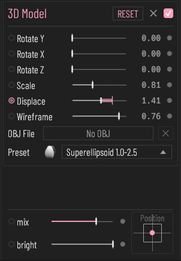
| Mix | Station dry/wet mix: 0 passes the previous station's output through, 1 is fully wet |
| Brightness | Output brightness gain of this station (0–4, double-click resets to 1) |
| Position / Scale | Position / Scale: drag to move, scroll to zoom (0.25–4), double-click to centre the position and return the zoom to 1 |
| Mask icon | Click to open this module's brush-mask panel: painted areas can be removed or kept |
Each module instance keeps its own mask, painted on the preview while the mask panel is open. The mask follows the visible picture: after the output aspect ratio is changed, the strokes stay at the same relative position in the picture. The strokes, the mode, and the brush settings are saved with the settings and in project files.
| Off / Erase / Keep | Mask mode (click to cycle): Off / Erase (painted areas are removed) / Keep (only painted areas remain). Drag on the preview to paint; the strokes, mode, and brush settings are saved and restored after relaunch or when a project file is loaded |
| Size | Brush size (0.01–0.30); affects strokes painted afterwards only |
| Softness | Brush edge softness (0–1); affects strokes painted afterwards only |
| Noise | Brush noise amount (0–1); affects strokes painted afterwards only |
| Opacity | Brush opacity (0.05–1); affects strokes painted afterwards only |
| Clear | Clear the painted mask and return to the unmasked state; the mode and brush settings are kept |
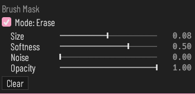
The source station. Two slots sit side by side: Modifier on the left, Carrier on the right. Each slot takes a camera, a video file, or a photo. The Modifier supplies the Color signals, the Displace controls of the modules, and the Flow Warp flow field; the Carrier is the image fed into the chain.
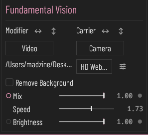
| Module | Source input module: Modifier (left) modulates Carrier (right); Mix blends between them |
| Modifier | Modifier slot: the modulating material; source for Color CV, particle Displace, and the Flow Warp flow field |
| Carrier | Carrier slot: the main image, fed into the downstream processing chain |
| Mix | Blend between the Carrier and Modifier sources: right shows Carrier, left shows Modifier |
| Brightness | Fundamental Vision output brightness (0–1, 1 = original brightness) |
| Source type | Source type: camera, video, or photo (drop a file to load video/photo) |
| Remove background | Background removal (three states: off / keep the person / inverted, keep the background): MediaPipe computes the foreground mask, applied to the image after Modifier and Carrier are mixed |
| Flip H | Horizontal flip (left-right mirror) of the source image; applied at the producer stage, affecting the whole chain |
| Flip V | Vertical flip (top-bottom mirror) of the source image; applied at the producer stage, affecting the whole chain |
| Speed | Playback speed of the loaded video (0 pause, 1 normal, 5 fivefold) |
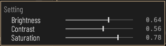
| Camera | Select the camera input device |
| Settings icon | Click to open the colour settings panel (Brightness / Contrast / Saturation, software correction); Carrier and Modifier keep independent settings |
| Brightness | Brightness (software correction, 0–1, 0.5 = unchanged) |
| Contrast | Contrast (software correction, 0–1, 0.5 = unchanged) |
| Saturation | Saturation (software correction, 0–1, 0.5 = unchanged) |
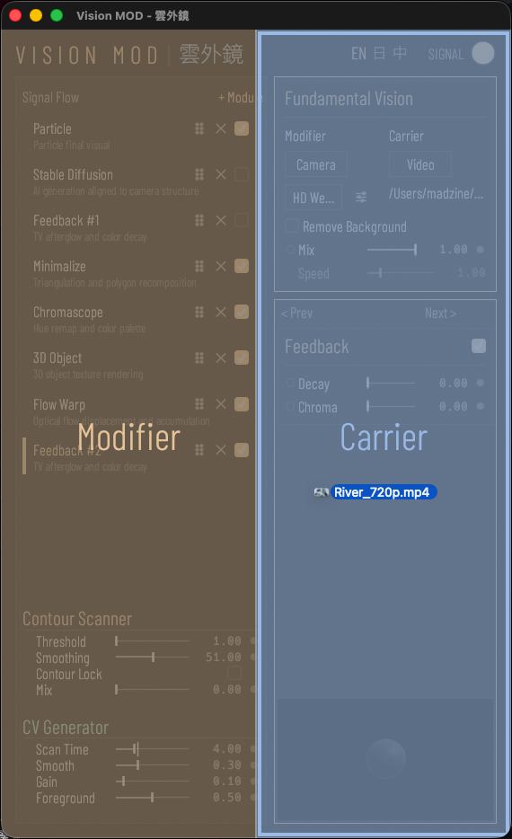
| File path | Path of the loaded file; drop a file onto the window to load (left half = Modifier, right half = Carrier) |
If the video or photo file cannot be found or read (for example the file was moved, or the project comes from another computer), the control window shows a message naming the slot. Drop the file onto the window again; the message disappears once the file can be read.
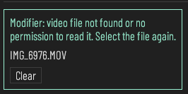
Below the module panel, the main window always shows the Contour Scanner module and the CV Generator. The scanner detects contours from the image; the CV Generator turns the scan, motion, and colour into modulation signals. The global action rows (PRESET, PLUGINS, OUTPUT, View Panic, MANUAL, Help) sit at the top of the Contour Scanner module.
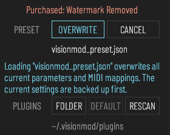
| Module | Contour Scanner module: detects contours from the image for the SEQ signals and the contour overlay |
| Preview | Contour preview: contour lines, the scan point and a draggable scan ROI circle |
| Scan ROI | Scan ROI circle: drag the centre to move the scan anchor, drag the edge to resize the scan range |
| Threshold | Contour edge detection threshold: higher keeps only stronger edges |
| Smoothing | Contour temporal smoothing: the value is the weight of the new frame; lower is slower and steadier, 100 disables smoothing |
| Stillness | Stillness: contour update gate (not the edge detection threshold):the image must change by more than this percent before contours are detected again. Higher holds the contour stiller and costs less CPU/GPU, lower reacts faster, 0 recomputes almost every frame |
| Contour Lock | Lock the current contour: detection stops and the scan keeps running along the locked contour; while locked, Threshold, Smoothing and Stillness are greyed out |
| Mix | Blend ratio of the contour overlay onto the image |
| Module | CV Generator: derives modulation signals from the image (contour SEQ, Movement, Color) |
| Scan Time | Contour scan period: time for one full scan pass (0.1-300 s); the white line on the track shows the current scan position |
| Smooth | Smoothing of the SEQ and Movement signals |
| Gain | Gain of the Movement signal (source: final output image) |
| Foreground | Foreground threshold: only pixels with alpha above this value count toward Movement and Color CV |
Turns the incoming image into AI-generated visuals. macOS runs Stable Diffusion 1.5 with ControlNet and a Hyper-SD15 1-step LoRA on Metal; Windows runs Stream Diffusion on CUDA / TensorRT. Only one Stable Diffusion instance can exist in the chain. The dry/wet balance is the station Mix; while Enable is unchecked, Mix is forced to 0 so the chain never receives an empty AI frame.
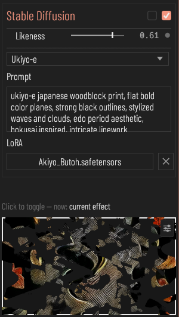
| Enable | Enable Stable Diffusion: loads the model and turns the previous module's output into AI visuals in real time; unchecking releases it. Each time it is checked Mix starts at 0, so raise Mix to see the result; the prompt is kept |
| Grayscale | Force the AI output to grayscale |
| Likeness | How closely the AI output follows the structure of the previous module's output (high = closer to the input image) |
| Preset | Switch built-in style prompts (29 styles/materials) |
| Prompt | Text prompt for AI generation (describes the desired style) |
| LoRA | Choose a LoRA file (.safetensors) to apply to Stable Diffusion (Stream Diffusion on Windows) |
| LoRA X | Clear the selected LoRA file and use no LoRA |
| Status | SD service status: shows SD Loading while starting, then the active acceleration backend |
The prompt is kept when Enable is switched off and on again, after a relaunch, and after LOAD. Stable Diffusion is always switched off after a relaunch or LOAD, and Mix starts from 0 when it is enabled. If the LoRA file cannot be found or read, the LoRA row shows a message and images are generated without the LoRA; the message disappears after the file is chosen again.
Eight layers are laid over the image, one per audio input. Base Hue sets the starting hue and Hue Spread distributes the layers around it. Curve and Angle set the first layer; each Spread adds that amount per layer. The layers are split by the brightness of the previous module's output, not by equal areas of the image. Level 1 to 8 set each layer's brightness; a layer at 0 is removed. The dry/wet balance is the station Mix.
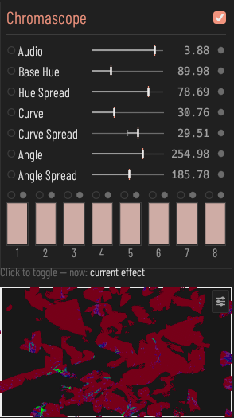
| Enable | Enable the Chromascope colour effect |
| Audio | Chromascope waveform gain (0 to 5): 0 shows no lines; up to 3 scales the waveform; 3 to 5 also lifts the waveform so lines widen |
| Base Hue | Chromascope base hue |
| Hue Spread | Chromascope hue spread across the eight layers: layer k hue = base hue + spread × k / active layer count |
| Curve | Chromascope waveform bend of the first layer; higher values make lines sparser with the bend at the center |
| Curve Spread | Chromascope bend change per layer (positive or negative): layer k = curve + k × this value |
| Angle | Chromascope waveform direction angle of the first layer (0 to 360 degrees) |
| Angle Spread | Chromascope angle increase per layer: layer k = angle + k × this value |
| Level 1 to 8 | Chromascope brightness of this layer, driven by the audio input of the same number; layers are split by the brightness of the previous module's output, not by equal areas of the image; at 0 the layer is removed and the remaining layers re-divide the brightness range |
Rebuilds the image as polygons from tracked seed points. Mode picks Triangle (Delaunay mesh), Cell (Voronoi), or Square (Quadtree rectangles); Fill toggles between filled polygons and edge-only wireframe. Polygon colour is sampled from the chain input; the Modifier only displaces the seed points.
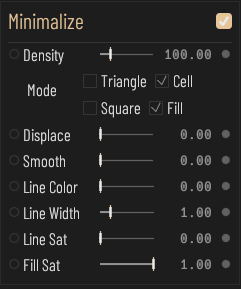
| Enable | Enable Minimalize: re-partition the previous module's output into polygons (Voronoi / Delaunay / Quadtree) using seed points |
| Density | Upper bound of seed point count (0-500); higher values yield finer polygons |
| Mode | Minimalize topology: Triangle (Delaunay mesh) / Cell (Voronoi) / Square (Quadtree rectangles) |
| Fill | Toggle polygon fill: when on, polygons are filled with Fill Sat saturation; when off, only edges are drawn (wireframe) |
| Displace | Seed points are displaced as 2D vectors by the Modifier image R/G channels (Image Displace exception: Modifier acts as a displacement vector source here, not as colour sampling); 0 = off, higher values yield stronger polygon jitter |
| Smooth | Temporal smoothing of seed points: higher values reduce LK tracking jitter but slow the response to image change |
| Line Color | Polygon edge colour: with Line Sat at 0 (the default), 0 to 0.5 goes from black to white and anything above 0.5 is white; with Line Sat above 0, 0 is black, 0.5 is the hue and 1 is white |
| Line Width | Polygon edge line width (0–5, 0 draws no line) |
| Line Sat | Edge line saturation (0 = black/grey, 1 = fully saturated hue) |
| Fill Sat | Fill saturation (no visible effect when the Fill toggle is off) |
A ray-marched 3D object skinned with the chain input. Shape morphs between five primitives; Distort, Repeat, Spacing, Jitter, and Smooth shape the field; Zoom, Pan, and Tilt move the camera. Displace pushes the surface by Modifier luma.
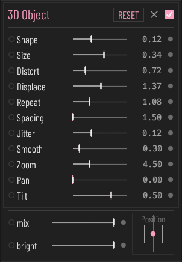
| Enable | Enable 3D Object: SDF raymarch solid object rendering |
| RESET | Reset all 3D Object parameters to their defaults and disconnect modulation |
| Shape | 3D object shape: morph between 5 primitives (sphere/box/torus/octahedron/gyroid) |
| Size | Overall size of the 3D object |
| Distort | Domain warp (sine-domain distortion) strength; the default is 0 (off) and the fader's lower limit is 0.01 |
| Displace | Displaces the 3D object surface by Modifier image luma (0 = off; higher = deeper relief) |
| Repeat | Domain repeat: amount of spatial array replication; the default is 0 (off) and the fader's lower limit is 0.01 |
| Spacing | Spacing of the repeated array |
| Jitter | Jitter of the array arrangement |
| Smooth | Blend smoothness (0–5): 0 is a single shape; above 0 a second small sphere appears and blends into the main shape, higher is smoother |
| Zoom | Camera distance to the object (2–10) |
| Pan | Camera horizontal orbit angle |
| Tilt | Camera pitch angle |
Renders a 3D mesh skinned with the chain input. The mesh comes from an OBJ file you choose or from one of 100 built-in preset shapes. Several 3D Model instances can be in the chain, each with its own mesh. Rotate Y and Rotate X orbit the camera around the model, Rotate Z rolls the picture, and Scale sets the camera distance. Rotate X / Y / Z, Scale, Displace, and Wireframe are modulatable.
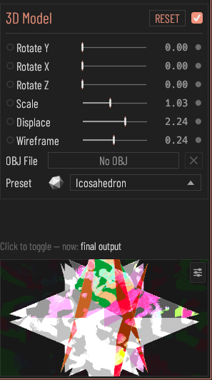
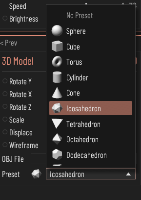
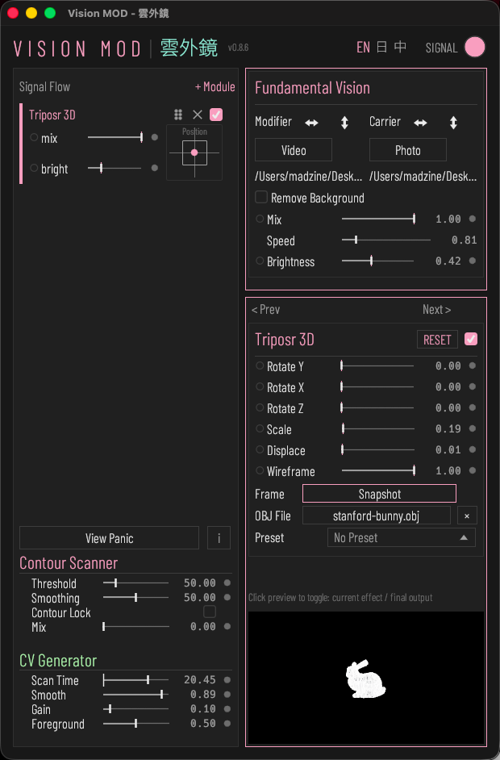
| Enable | Enable 3D Model: renders the 3D model from the loaded OBJ file or a built-in shape |
| RESET | Reset all 3D Model parameters to their defaults, remove the loaded model (OBJ file and built-in shape) and disconnect modulation |
| Rotate Y | Angle of the camera orbiting horizontally around the model (0–360°) |
| Rotate X | Angle of the camera orbiting vertically around the model (0–360°) |
| Rotate Z | In-picture rotation (roll) angle (0–360°) |
| Scale | Size of the model on screen (0.1–5): this actually sets the camera distance (1.2 ÷ this value); higher moves the camera closer and the model looks larger |
| Displace | Displaces mesh vertices along their normals by Modifier image luma (0 = off; higher = deeper relief) |
| Wireframe | Wireframe blend: 0 solid, 1 pure wireframe, values between mix both |
| OBJ File | Choose an OBJ file (.obj) to load a 3D model; clear to remove it |
| Preset | Choose a built-in shape (100 total) as the 3D model; pick No Preset to deselect |
| Preset: No Preset | No Preset: deselect the built-in shape |
| Preset: shape | Use this built-in shape as the model; a loaded OBJ file is replaced |
Samples the chain input into a 3D particle field. Density, Size, Jitter, and Shape define the particles; Depth Mix and Displace move them along the z-axis; Zoom moves the whole field forward and back along the z-axis (no visible effect while Depth Mix is 0), and Scale X / Y / Z scale the field.
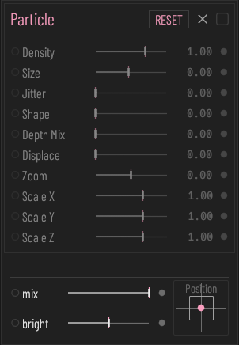
| Enable | Enable Particle rendering |
| RESET | Reset the Particle parameters and the view angle to their defaults and disconnect modulation; Displace, Mix, Brightness and the position are left unchanged |
| Density | Particle density (number of sampled particles) |
| Size | Particle size |
| Jitter | Amount of particle position jitter |
| Shape | Particle shape: morphs across 7 shapes (circle / square / triangle / hexagon / diamond / star / ring); at 1 each particle takes one of them at random |
| Depth Mix | How much depth affects particle distribution along the z-axis |
| Displace | Strength of Modifier luma displacing particles along the z-axis |
| Zoom | Moves the particle field forward and back along the Z axis (-1 to 1): positive values bring it closer to the camera, negative values move it away; with Depth Mix at 0 there is no visible effect |
| Scale X | Particle field scale along X (negative mirrors) |
| Scale Y | Particle field scale along Y (negative mirrors) |
| Scale Z | Particle field scale along Z (negative mirrors) |
Displaces the image along the optical flow computed from the Modifier.
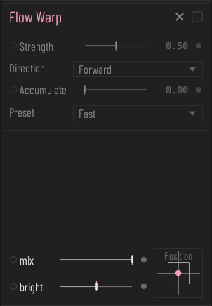
| Enable | Enable the Flow Warp effect (flow field is computed from the Modifier source) |
| Strength | Strength of the optical-flow displacement effect |
| Direction | Displacement direction (forward / reverse / bidirectional) |
| Direction: Forward | Forward: the image is pushed along the detected motion |
| Direction: Reverse | Reverse: the image is pushed against the detected motion |
| Direction: Bidirectional | Bidirectional: the forward and reverse results are mixed half and half |
| Accumulate | Accumulate (0–0.95): how much of the previous frame's result is mixed in; higher gives longer trails |
| Preset | Optical-flow computation preset (Ultrafast / Fast / Medium): Ultrafast is the fastest and coarsest. With several Flow Warp modules, the setting of the first one in the signal flow is used |
| Preset: Ultrafast | Ultrafast: the fastest and coarsest optical-flow estimate |
| Preset: Fast | Fast: a middle setting between speed and detail for the optical-flow estimate |
| Preset: Medium | Medium: the slowest and most detailed optical-flow estimate |
Feeds the output back into itself to build trails.
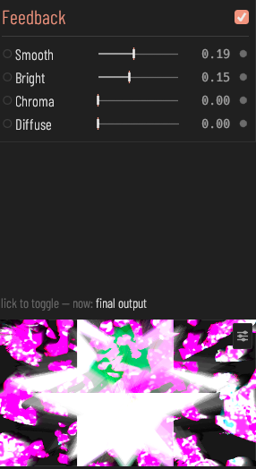
| Enable | Enable the Feedback effect |
| Smooth | Smooth: how much of the previous frame is mixed in; higher gives longer trails; 0 gives no trails only when Bright is also 0 |
| Bright | Bright gain (0–1): 0 adds no brightening; below 0.5 the bright trails stay bounded, at 0.5 and above bright areas grow frame by frame until white |
| Chroma | Chromatic aberration (0–0.005): how far the red channel shifts left and the blue channel shifts right; 0 is off |
| Diffuse | Diffuse (0–1): blur applied to the fed-back image; 0 is no blur, higher values spread the trails more |
Records the incoming image continuously at 30 fps, keeps the most recent Buffer seconds, and loops them at a slower speed. The recording is cleared and starts again when Buffer converts to a different frame count, or when the station is toggled off and on. The recorded frames are not saved in the settings or in project files.
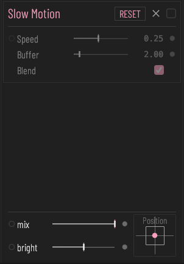
| Enable | Enable Slow Motion: records the previous module's output and loops it slowed down; turning it off and on clears the recording and starts again |
| RESET | Reset all Slow Motion parameters to their defaults and disconnect modulation; the recording is cleared only when Buffer converts to a different frame count than before |
| Speed | Playback speed (0.05–1, 1 = original speed): the image is recorded at a fixed 30 fps and played back at 30 x this value. 0.25 = 4x slow motion. Playback loops within the most recently recorded segment |
| Buffer | Segment length (0.5-15 s): recording runs continuously at 30 fps, keeping the most recent N seconds and looping them. The recording is cleared and starts again when this value converts to a different frame count, or when the module is toggled off and on. Larger values use more VRAM |
| Blend | Frame blending: interpolates between two adjacent recorded frames so slow motion stays smooth. Off plays discrete frames with visible stutter |
Runs a third-party fragment shader as a station. Plugins are single .wgsl files read from the plugin folder (default ~/.visionmod/plugins/, top level only). The folder is chosen with the PLUGINS row in the main window and is rescanned automatically when it changes. The Plugin panel has a dropdown for choosing the plugin; Automatic uses the first plugin in the list that runs correctly, and plugins that fail to compile are listed with their status but cannot be selected. Below it are a built-in Displace fader (displaces the input image using the Modifier image; 0 turns it off) and the faders declared by the selected plugin. When no plugin is available the station passes the image through.
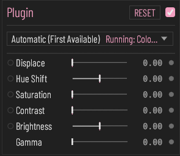
| Enable | Enable the Plugin module: the selected plugin processes the previous module's output; if the plugin is unavailable the image passes through unchanged |
| RESET | Reset the plugin parameters to their defaults and disconnect all modulation; the plugin selection is kept |
| Automatic (First Available) | Automatically use the first plugin in the list that runs correctly |
| Displace | Displaces the input image using the Modifier image; 0 turns it off |
Metadata lives in a block of //! comment lines at the top of the file. api and name.en are required; name.zh, name.ja, author, description, url, and param lines are optional. Parsing stops at the first line that is not a //! comment. The plugin id is the file name in lower case, so renaming the file makes it a different plugin.
The action rows at the top of the Contour Scanner module apply to the whole program.
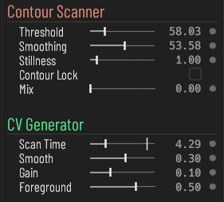
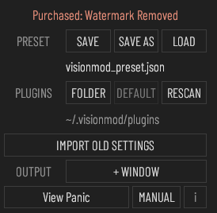
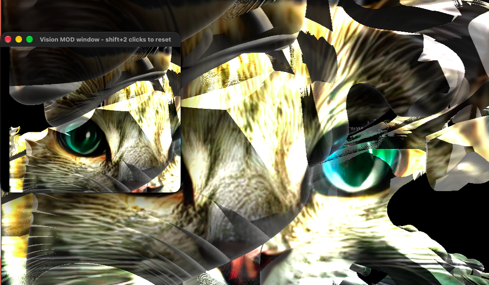
| PRESET | SAVE writes all current parameters and MIDI mappings back to the current project file; if there is no project file yet, or the file was moved or cannot be written, the Save As window opens instead. SAVE AS writes them to a .json file you name. LOAD reads a .json file; because loading overwrites all current parameters and MIDI mappings, an inline OVERWRITE / CANCEL confirmation appears first (Esc also cancels). The row below shows the name of the current project file, or No project file yet; the file saved or loaded last becomes the current project file. |
| PLUGINS | FOLDER opens a folder picker for the plugin folder; DEFAULT returns to the default folder; RESCAN reloads the plugin folder after adding or editing plugin files. The second row shows the folder in use, or No folder available. |
| OUTPUT + WINDOW | Add an output window. Inside the output window: drag the window border to change the crop, drag on the image to pan, pinch or Ctrl+scroll to zoom, double-click to toggle fullscreen, Shift+double-click to reset to the full image |
| Main output window | Main output window: drag anywhere to move the window, drag the bottom-right corner to resize, double-click to toggle full screen |
| View Panic | View Panic: click when the main visual freezes; rebuilds the rendering resources, restarts the camera and resets the internal state of Minimalize |
| MANUAL | Open the online manual on the official website (madzine.work) in the default browser |
| Help (i) | Toggle Help mode: when on, hovering a control shows its description in the current language next to the cursor; when off, nothing is shown |
| DISMISS | Dismiss this message |
A project file holds all parameters of every module, the MIDI mappings, the brush masks (strokes, mode, and brush settings), the position, size, and full-screen state of the windows, the selected module, the preview switch, and the Help mode switch. LOAD applies everything in the file, including language, colour, audio devices, MIDI output, cameras, output windows, and the plugin folder. A window position that is not on a connected display falls back to the default position. A project file saved before MIDI mappings were included leaves the current mappings unchanged.
Not saved: the frames recorded by Slow Motion. After a relaunch or LOAD, the SIGNAL window is closed and Stable Diffusion is switched off.
Before LOAD applies a file, the current settings are backed up automatically to the settings folder (~/.visionmod) as app_state.backup-<number>.json. The 5 most recent backups are kept, and a backup can be opened with LOAD. A file saved by a newer version of Vision MOD is not opened: a message asks you to update the app, and the current settings stay as they are. After a successful save, the project file row briefly shows Saved: and the file name; if saving or loading fails, a message with the reason appears below the row.
The SIGNAL toggle in the top bar opens a floating window. The left column shows a preview and the seven CV meters (Sequence 1 / 2, Movement, Color R / G / B / Saturation). The right column holds Audio Inputs, CV Output, and LFO.
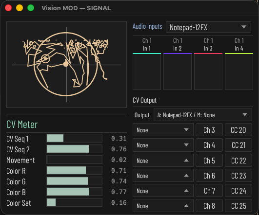
The SIGNAL window is always closed when the program starts; its position and size are remembered. Choosing None for the audio input or the output is kept after a relaunch.
| Module | CV Meter: shows the seven modulation signals derived from the image (contour SEQ 1 / 2, Movement, Color R / G / B / Sat) |
| Sequence 1 | SEQ1 sequence signal: horizontal distance between the moving scan point and the anchor (0-10V, smoothed); the fill shows the current output |
| Sequence 2 | SEQ2 sequence signal: vertical distance between the moving scan point and the anchor (0-10V, smoothed); the fill shows the current output |
| Movement | Movement energy: mean frame-to-frame luma difference of the final output image, scaled by Gain (0-10V, smoothed) |
| Color Red | Average red of the Modifier frame (0-10V), usable as a modulation source and CV output |
| Color Green | Average green of the Modifier frame (0-10V), usable as a modulation source and CV output |
| Color Blue | Average blue of the Modifier frame (0-10V), usable as a modulation source and CV output |
| Color Saturation | Average saturation of the Modifier frame (HSV S, 0-10V), usable as a modulation source and CV output |
| Module | Audio Inputs: eight audio input tracks whose levels (RMS) serve as modulation sources |
| Device | Audio input/output device selection |
| Channel | Which input device channel this track reads from |
| Meter | Input level meter for this track (peak); the top colour line matches the same-numbered Chromascope channel |
The Output dropdown selects the audio output device and the MIDI output port together. Each route then picks a source signal, an audio output channel, and a MIDI CC number.
| Module | CV Output: sends modulation signals to audio output channels (ch 3+) and a MIDI device |
| Output | Destination of the CV signals: pick an audio output device under Audio Output and a MIDI output device under MIDI Output; both can be used at once, and None sends nothing on that side |
| Source | Source of a modulation signal; sent to both an audio output channel and a MIDI device (per-route CC#, 14-bit) |
| Ch | Which audio output channel this CV signal is sent to (the MIDI side uses the CC# field on the right). Usable channels run from 3 up to the device channel count; a route set below 3 or above the device channel count outputs nothing |
| CC | MIDI CC number for this route (0-127); sent as 14-bit (MSB=CC, LSB=CC+32), falling back to 7-bit when CC>95 |
| No output device | With no output device, CV is not sent to audio output channels; the scan and meters keep running |
| LFO 1 to 4 | LFO: four built-in low-frequency oscillators, each with its own waveform and rate, usable as modulation sources |
| Waveform | LFO waveform: click to cycle Sine / Triangle / Square / Saw |
| Rate | LFO rate (0.01–20 Hz): drag up or down to adjust, double-click to type a value |
Modulatable faders have a small dot on the left of the label. Left-click the dot to switch the connection on or off; right-click it to open the popup, pick one Source from the grid, and set Amount. Amount is bipolar (-1 to 1, centre 0), so a source can push the parameter either way. Each parameter holds one connection.
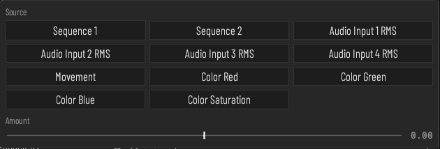
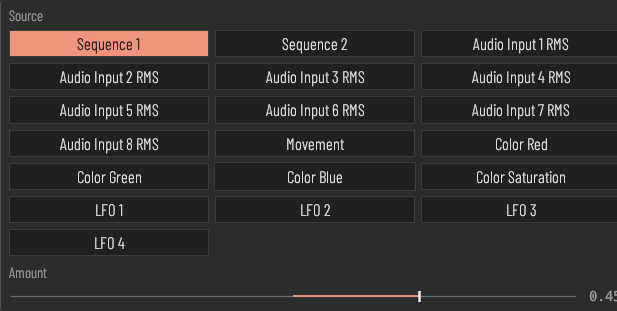
| Modulation dot | Modulation dot: left-click connects or disconnects modulation for this parameter (a new connection starts at amount 0); right-click opens the source and amount settings |
| Source | Modulation source: click to choose which signal modulates this parameter |
| Amount | Modulation amount (-1 to 1): 0 is no modulation, negative values invert; double-click resets to 0 |
| Sequence 1 / 2 | Contour scan signals. |
| Audio Input 1 to 8 RMS | Level of the eight audio input tracks. |
| Movement | Motion energy of the final output image. |
| Color Red / Green / Blue / Saturation | Average colour of the Modifier frame. |
| LFO 1 to 4 | Built-in LFOs set in the SIGNAL window. |
Faders that support MIDI have a binding dot on the right of the value. Right-click it and choose MIDI Learn, then move a control on your MIDI device; the dot turns to the accent colour when bound. The same menu shows the bound channel and CC and offers Clear Binding. While it is waiting for a control, the menu also offers Cancel MIDI Learn. Only 7-bit Control Change messages are learned. Removing a module removes its bindings. MIDI mappings are saved in project files, and LOAD replaces the current mappings with those in the file.
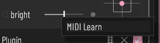
| MIDI Learn | MIDI Learn: click, then move a knob or fader on the MIDI controller; the next CC received is bound to this parameter |
| Clear Binding | Clear Binding: remove the MIDI binding of this parameter |
The Mac App Store build draws a semi-transparent VISION MOD watermark in the centre of the output until the one-time purchase is made. The purchase row sits above PRESET.
| Remove Watermark | One-time purchase that permanently removes the watermark from the output. The App Store shows the price for your region. Once bought, the row reads Purchased: Watermark Removed. If the purchase is waiting for approval, the watermark is removed automatically once it is approved. |
| Restore Purchases | Already purchased (reinstall or another Mac)? Restore with the same Apple Account. You will not be charged again. |
| IMPORT OLD SETTINGS | Imports parameters, modules, MIDI mappings, plugins, and colour saved by the earlier DMG version (in ~/.visionmod and ~/.config/visionmod). Choose your home folder, or one of those two folders, in the window that opens. Because importing overwrites all current parameters and MIDI mappings, an OVERWRITE / CANCEL confirmation appears first (Esc also cancels); the current settings are backed up before the import. The imported settings apply right away without a relaunch. Settings saved by a newer version of Vision MOD are not imported. |